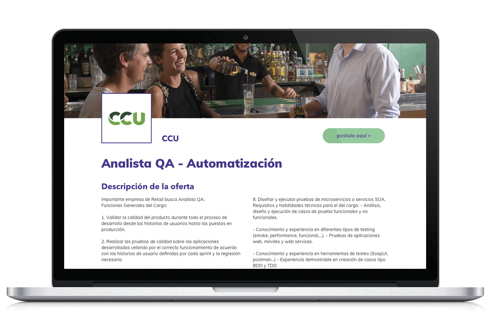
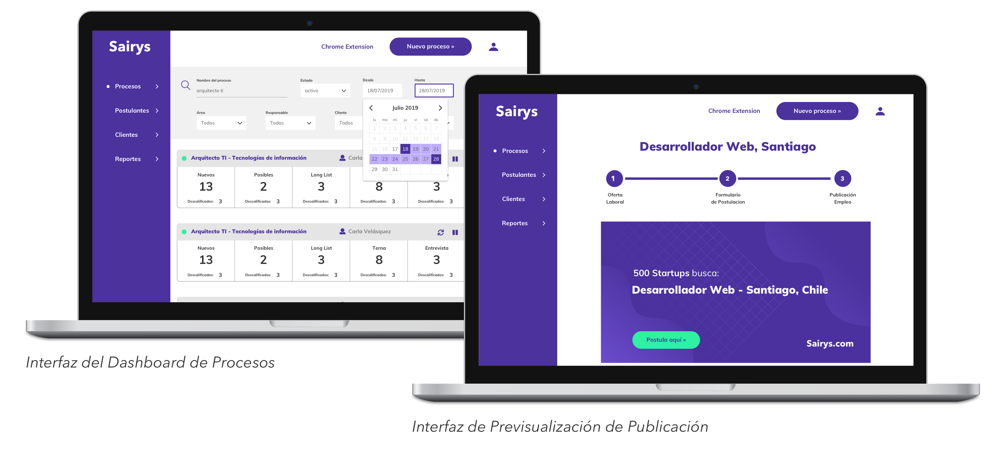
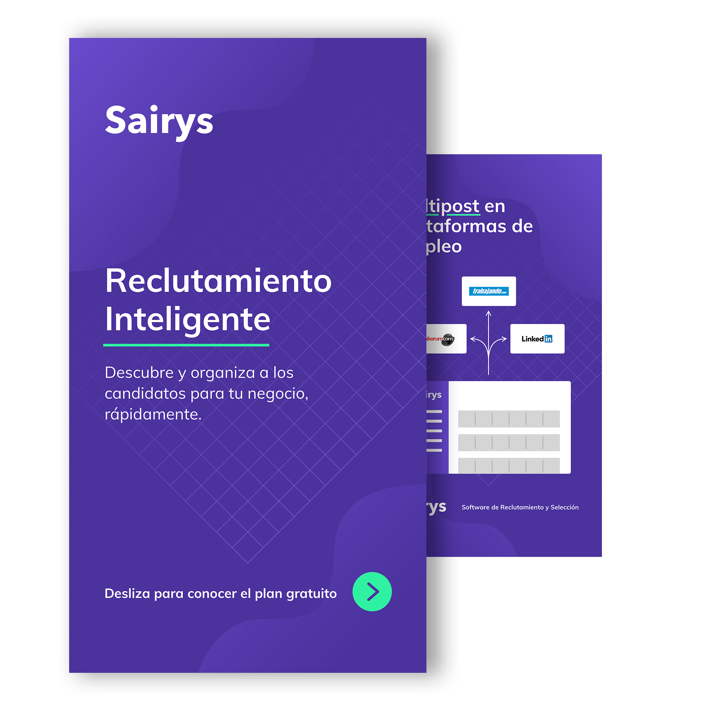

NONCREATIVE

Diseño de Producto | Webflow Development
NONCREATIVE

Daaily Platforms: Product Design, Monetization & Growth
Daaily Platforms (Switzerland)
En Daaily Platforms trabajé de manera transversal con dos de sus marcas principales ArchDaily y Architonic participando en iniciativas de monetización, accesibilidad y crecimiento, desde una perspectiva de diseño de producto y diseño web.
ArchDaily necesitaba diversificar sus fuentes de ingresos sin comprometer su misión editorial, al mismo tiempo que mejoraba la accesibilidad y exploraba nuevas formas de interacción con el contenido.
Como Product Designer dentro del equipo de Monetización y Nuevos Productos, participé en la definición y diseño de nuevas funcionalidades premium bajo ArchDaily Plus, enfocadas en transformar el contenido editorial en productos digitales escalables.
Landing page de ArchDaily Plus+
Con esta información se asignaron tareas al equipo de desarrollo que en este caso
eran: un Full Stack Developer y un UX/UI Visual Designer.
Para dar orden a los sprints de desarrollo hicimos una matríz con la que pudimos
ir priorizando en las mejoras vitales que el Sofware necesitaba.


Identidad Corporativa
Una de estas prioridades era la marca, que no contaba con un sistema de diseño
y tampoco era conocida.
Se hicieron campañas de Advertising en distintas plataformas
para atraer e invitar a usuarios a probar el software.
Con la analítica comparabamos los cambios hechos para ir aseverando ó descartando
hipótesis, avanzando así en la mejora continua del producto.

"Las mejoras en usabilidad nos ayudaron a hacer los procesos de selección en menor tiempo"
Carla Velásquez / Psicóloga en Smartjob SPA